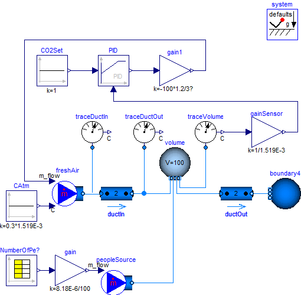

RoomCO2WithControlsDemonstrates a room volume with CO2 controls |
|
Diagram
{kind=link}
Information
This information is part of the Modelica Standard Library maintained by the Modelica Association.
This example illustrates a room volume with a CO2 source and a fresh air supply with feedback
control.
The CO2 emission rate is proportional to the room occupancy, which is defined by a schedule.
The fresh air flow rate is controlled such that the room CO2
concentration does not exceed 1000 PPM (=1.519E-3 kg/kg).
The fresh air has a CO2 concentration of 300 PPM which corresponds to a typical
CO2 concentration in the outside air.
The CO2 emission from the occupants is implemented as a mass flow source.
Depending on the activity and size, a person emits about 8.18E-6 kg/s CO2. In the model,
this value is multiplied by the number of occupants.
Since the mass flow rate associate with the CO2 source model contributes to the volume's energy balance,
this mass flow rate should be kept small. Thus, in the source model, we set the
CO2 concentration to C={100} kg/kg, and scaled the mass flow rate using
m_flow = 1/100 * nPeo * 8.18E-6 kg/(s*person)
where nPeo is the number of people in the room.
This results in a mass flow rate that is about 5 orders of magnitudes smaller than the supply air flow rate,
and hence its contribution to the volume's energy balance is negligible.
The nominal value for the trace substance is set to C_nominal={1.519E-3}.
This scales the residual equations that are used by the solver to the right order
of magnitude.

Components (17)
| CAtm |
Type: Constant Description: Atmospheric trace substance concentration, corresponding to 300 PPM CO2 |
|
|---|---|---|
| boundary4 |
Type: FixedBoundary |
|
| traceVolume |
Type: TraceSubstances |
|
| system |
Type: System |
|
| freshAir |
Type: MassFlowSource_T |
|
| volume |
Type: ClosedVolume |
|
| ductOut |
Type: DynamicPipe Description: Outlet duct |
|
| traceDuctIn |
Type: TraceSubstances Description: Trace substance at duct inlet |
|
| peopleSource |
Type: MassFlowSource_T Description: CO2 emitted by room occupants. |
|
| numberOfPeople |
Type: CombiTimeTable Description: Time table for number of people in the room |
|
| gain |
Type: Gain Description: CO2 mass flow rate, released per 100 person (there is another 100 factor in peopleSource) |
|
| gain1 |
Type: Gain Description: Nominal fresh air flow rate (for u=1) |
|
| gainSensor |
Type: Gain Description: Gain to normalize CO2 measurement signal. y=1 corresponds to 1000 PPM |
|
| CO2Set |
Type: Constant Description: Normalized CO2 set point |
|
| PID |
Type: LimPID |
|
| ductIn |
Type: DynamicPipe Description: Inlet duct |
|
| traceDuctOut |
Type: TraceSubstances Description: Trace substance at duct outlet |